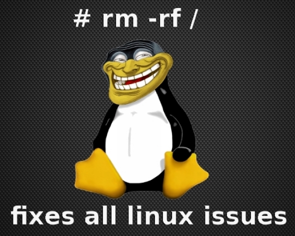

i dag Linux-introkurs
Lurer du på hva Linux er?
Dette kurset gir en kortfattet innføring om hvordan operativsystemet Unix oppstod og utviklet seg til en hel haug med operativsystemer vi bruker i dag; Linux, BSD, MacOS X med flere. Og det vil forhåpentligvis komme innom alle de viktigste begrepene i Unix-universet, litt om de mange fraksjoneringene av operativsystemet som har gitt opphav til nesten alle OS i dag (ett stort unntak), nerdekulturen som følger med og litt smått om personene bak det hele.
Hovedfokus i kurset er allikevel mer praktisk rettet mot bruk av kommandolinjen, skall, jobbhåndtering og enkel bruk av viktige verktøy i Linux.
Ingen forkunnskaper behøves, dette er et nybegynnerkurs for alle som vil begynne å bruke Linux (eller et annet operativsystem i Unix-familien) og vil ha et sted å starte.
Påminn meg via SMS